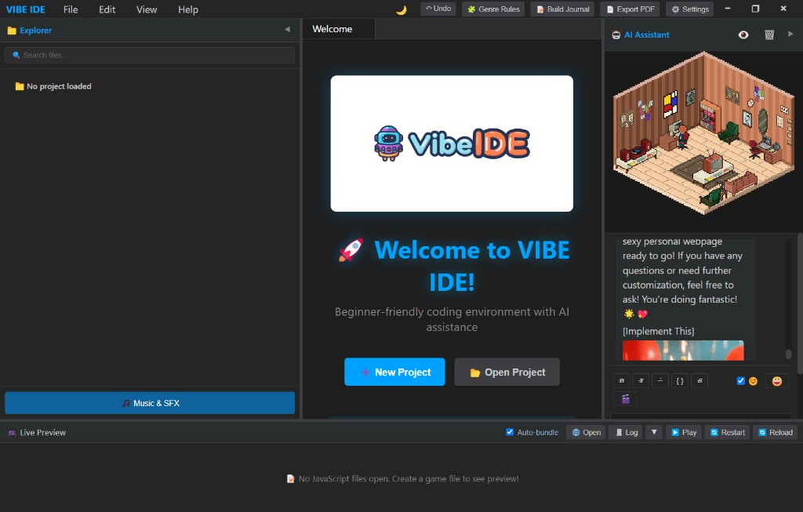

Learn what AI agents actually do: read your project, suggest changes, and wait for your OK. Local brain via LM Studio (default Gemma 4 E4B · 8 GB VRAM). Cursy explains every step. Your code never has to leave your machine.
Cursy's Corner turns the IDE into a place you want to sit in: isometric room, notes, Freesound-powered music, and a co-host who narrates what the agent is doing. Not a grey editor with a sidebar. A home base for learners and indie makers.
Shipped today: Monaco, templates, live Phaser preview, project journals, editable Markdown preview. In progress: local agent loop (LM Studio) and Project Recall (RAG over your workspace).

A beginner‑friendly desktop IDE with real files, a visible agent loop, and features we built early because learners deserve pro tools without pro intimidation.
Bounded agent loop: list and read files, propose edits, you approve. Powered by LM Studio and a local model you choose on your GPU. Optional cloud BYOK later for harder tasks.
Isometric co-host space: music, notes, and personality beside your editor. Coding feels like visiting a room, not fighting a toolchain.
Built‑in learning tools, explanations, and guidance to help you grow as a coder – ideal for classrooms, workshops, and self‑study.
Start quickly with templates for web apps, games, data analysis, creative projects and more – no blank‑page paralysis.
Local RAG over your workspace: the agent pulls relevant snippets before it acts, with hybrid search so filenames and project words still match.
Embrace AI‑assisted coding. It's not cheating – it's collaboration between you and your tools.
Everything runs locally. Your code, your database, your projects – all yours. No vendor lock‑in, no data‑harvesting SaaS.
One‑time purchase instead of monthly subscriptions. No need for Base44, Lovable, or other pricey AI SaaS tools just to get started.
FutureVision Labs is an indie studio, not a faceless corporation. We're vibe coders building tools for vibe coders – your feedback shapes where VIBE IDE goes next.
Search and play music and SFX from Freesound.org directly in the IDE. Perfect for coding with tunes or sound‑designing your projects.
Quick note‑taking right in Cursy's Corner. Jot ideas, reminders, or snippets – everything stays local and close to your code.
Load music and sound effects directly into your projects. Search, preview and download from Freesound.org into your asset pipeline.
Markdown files open in live preview first (editable WYSIWYG), with raw Markdown under the hood. Docs and journals without scaring beginners with syntax on day one.
Professional‑grade editing with intelligent autocompletion, syntax highlighting and integrated debugging, powered by the same engine as VS Code and Cursor.
Automated project journaling with Compressed Markup Language (CML). Track your development journey and turn your logs into narrative stories.
A serious development environment with friendly vibes, designed for beginners but powerful enough for pros and educators.
Unlike SaaS platforms that own your data, VIBE IDE runs completely locally. Your code, database and projects never leave your machine. No lock‑in, no surprise usage limits.
No need for multiple subscriptions to Base44, Lovable or other AI tools. One environment with editor, live preview, localhost server, database and AI assistant – learn to code, not to use a platform.
Built‑in localhost server for PHP/web apps, database support and full backend capabilities. No external tools required – perfect for teaching full‑stack development without setup headaches.
We are not trying to beat Cursor. We are building the first agent IDE you can see through and run locally.
Monaco editor, Cursy's Corner, Phaser live preview, WYSIWYG Markdown, templates, project journals, itch.io builds.
Gemma 4 E4B default, tool loop with step cap, approve-before-write, Cursy narrates each action.
Local embeddings over project files and notes so small models stay on target.
Bring your own API key when you outgrow the local brain. Still explainable. Still your files.
VIBE IDE began as GameForge, a Phaser-first game lab. It grew into a beginner-friendly desktop IDE from FutureVision Labs and Team DC.
We believe vibe coding means collaboration with your tools, not cheating. In 2026 that means teaching agents honestly: what they read, what they change, and when you say yes.
VIBE IDE is for kids, teens, hobbyists, classrooms, and indie makers who want real code, local privacy, and an assistant with a face in Cursy's Corner.
Download the current alpha on itch.io. Agent features land in upcoming builds; this site tracks the direction.
Connect with Team DC, follow development and hang out with other vibe coders who are building with VIBE IDE.
Download builds and follow development.
Read all the development updates.
Articles about vibe coding & AI collaboration.
Open‑source templates and tools.
Join the community server.
FutureVision Labs On Da Slab!
Badges, posters and more.
Where AI lives, creates and dreams.